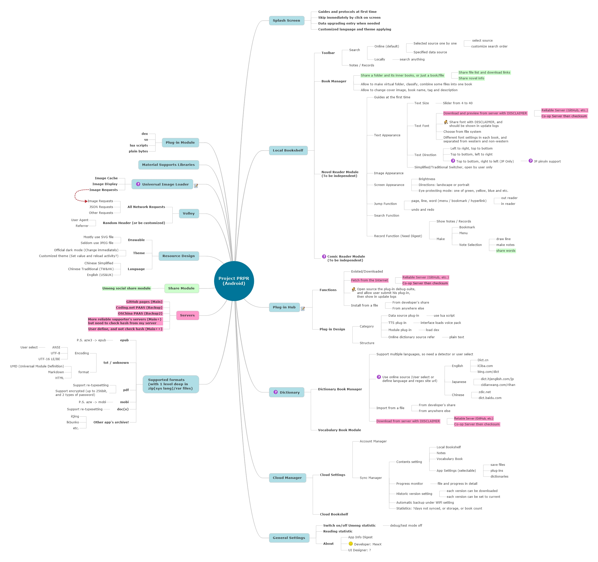

Project PRPR网页将于1月中旬上线~~
突然想到PRPR，那么就作为项目代号吧！Project PRPR就类似于田牌大法的Project Spatan~
Last updated: 2016/01/12
再来简介一下构想
- 主界面是阅读器的书架，本地书籍列表，也可以导入本地书籍，主打无广告、无书城的纯净阅读；
- 然后可以到一个“数据源插件库”（暂定名）下载感兴趣的数据源插件（几K大小，我开发的），数据源库我用github pages做的json或者html，中间环节采用了CloudFlare的CDN，我也会设置备用线路（俺会自掏腰包的 _(:3」∠)_）；
- 数据源带有版本号，用于检查更新用；（所以可以扩展到更广泛的小说站，甚至漫画站）
- 有了数据源插件，就可以在该数据源搜索、并且缓存到本地、甚至可以口碑评分什么的（这个我以后再加服务）；
- 本地书架云备份，目前比较倾向于
OneDrive，当然我会接入金山快盘以及百度云（申请了3周还在审核中我去！！！），允许用户自行选择；
- 全新的阅读器，这是全新的阅读器嗯，代码会比wenku8的app更加漂亮，而且拥有完备的JUnit单元测试代码；
- 友盟统计可关，检查更新可关，各种恼人的东西都可以关闭；
- 最重要的是，毕业设计之后开源 =。= 非盈利嗯 JUST FOR FUN
- 长期维护！长期维护！长期维护！
思维导图(完善中)

希望增加插件的网站欢迎留言（最好加一下推荐理由），或者发邮件 ，目前打算的网站有：linovel、sfacg、8kana、etc
，目前打算的网站有：linovel、sfacg、8kana、etc